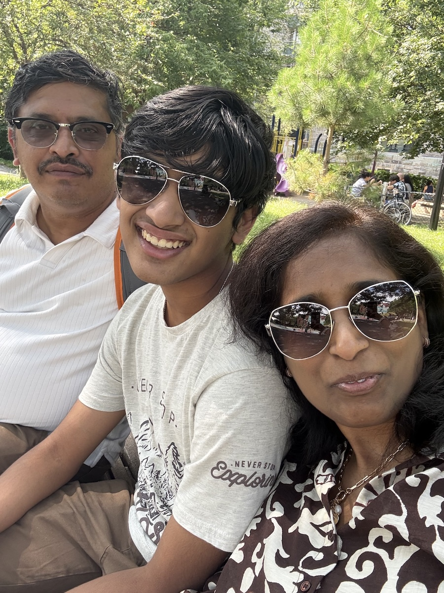
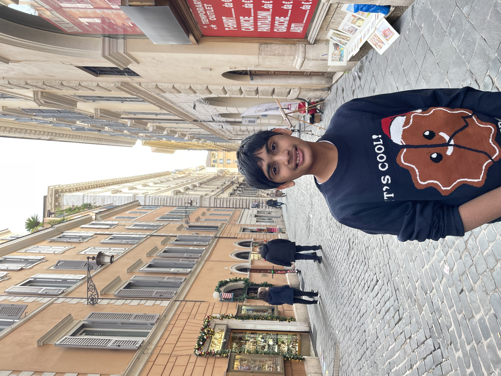

Hello! My name is Kaushik Satheesh Kumar, and if you didn’t already know, I am a current junior at the Massachusetts Academy of Math and Science. I am a former student of Shrewsbury High School, and live with my mom and my dad. I feel that I am best defined by my curiosity and passion for learning. When I come across something I don’t understand, my first instinct is to dig deeper. Whether it’s new technology, an unfamiliar scientific concept, or simply a question that catches my attention, I enjoy exploring it until it makes sense. That curiosity has fundamentally defined my interests over the years.
Since I was young, I have been passionate about engineering, having started out with Legos and FLL Robotics. Then, as my knowledge improved, my passions diversified. I started experimenting with Arduinos and circuitry, writing programs such as a blinker. This culminated in me developing a wearable for the visually impaired using a Raspberry Pi, machine learning, and sensors. Overall, I feel that not only doing something, but the action having a tangible purpose is what motivates me.
